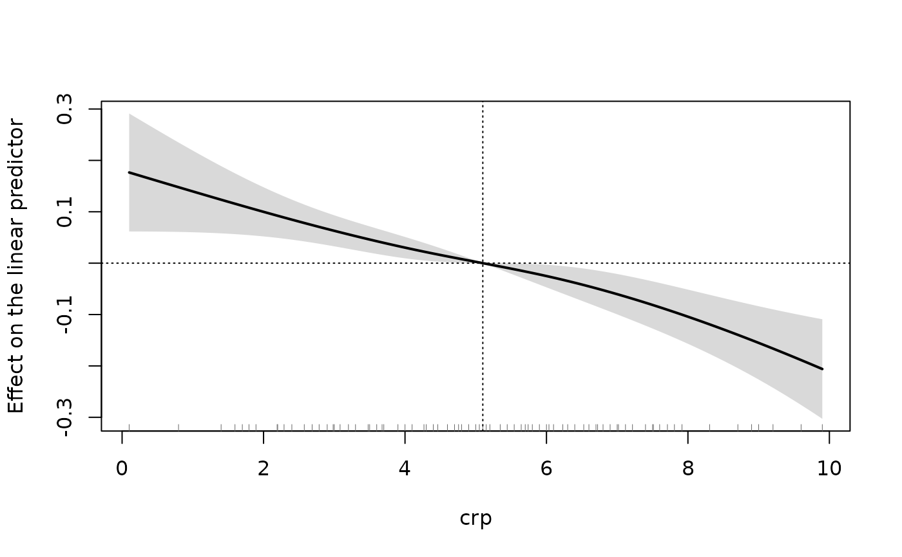
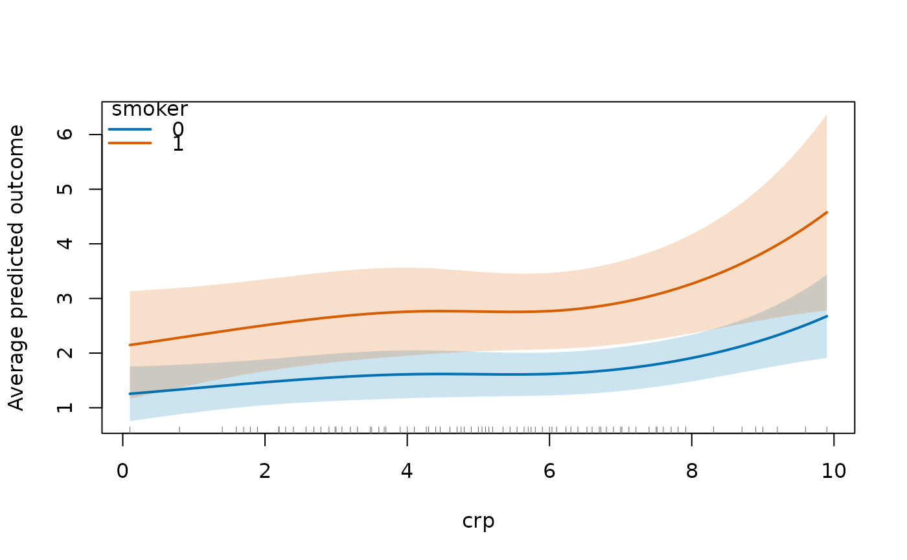
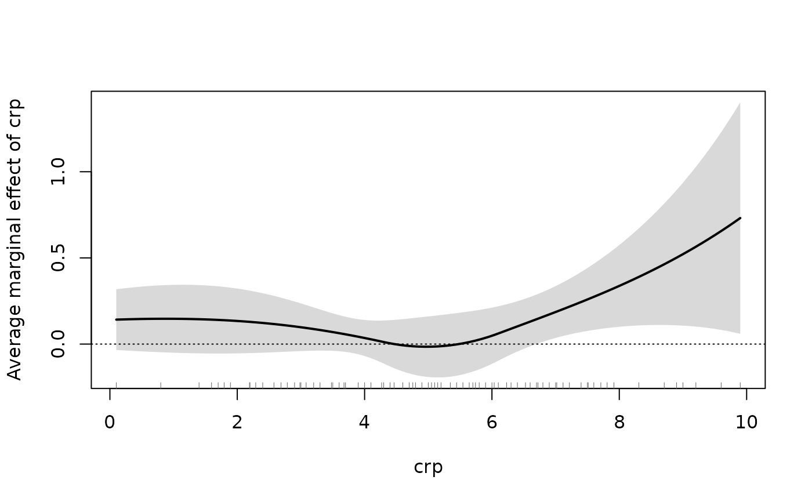
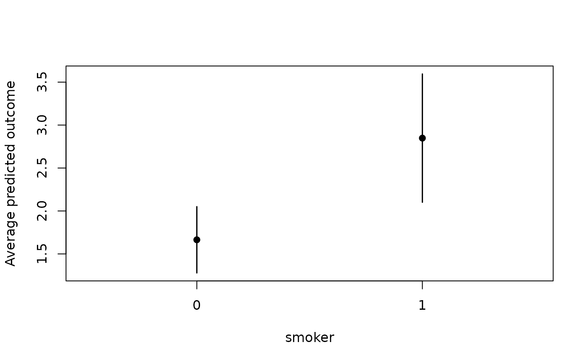

Three views of how the expected outcome depends on one regressor, each
with delta-method pointwise confidence limits from the covariance of the
fit. Use plot() to draw them.
Usage
effectcurve(
object,
variable,
values = NULL,
ref = NULL,
vcov = NULL,
level = 0.95,
scale = c("link", "response", "slope"),
by = NULL
)Arguments
- object
a
"panglm"fit- variable
name of the regressor
- values
values at which to evaluate the curve; default: 100 points between the 1st and 99th percentile of the regressor in the fit, or every level of a discrete regressor
- ref
reference value of the link-scale curve; default: the median of the regressor
- vcov
NULL(the covariance stored on the fit) or a type passed tovcov.panglm()- level
confidence level of the pointwise band
- scale
"link","response"or"slope", see Details- by
optional name of a discrete variable (factor, character, logical, or at most 10 distinct values) giving one curve per level; response and slope scales only
Value
a data frame of class "panglm_effectcurve" with columns
value, estimate, se, lower and upper (and by when by is
given). The attributes record the variable, scale, reference value and
the percentiles of the observed regressor used for the rug.
Details
scale = "link"(default): for a regressor entered through a regression spline (splines::ns(),splines::bs()), a polynomial or linearly, the change in the linear predictor when the regressor moves from the reference valuerefto each ofvalues. Centering at a reference is what makes the curve comparable across models: in fixed-effects fits the level is absorbed by the individual effects. The scale is the link scale: a difference in mean for the identity link, a log rate ratio for Poisson and negative binomial models, a log odds ratio for the logit link.scale = "response": the average adjusted prediction (partial dependence), that is the mean outcome when the regressor is set to each value for every observation of the fitted data, all other regressors at their observed values. The mean is the one used bypartialeffects(): the GLM mean for pooled fits and the population-averaged mean for random-effects fits, with the individual means of correlated random effects fits held at their fitted values. For a factor, logical or 0/1 regressor the curve has one point per level. Not available for fixed-effects (within) fits, where the level of the mean is not identified.scale = "slope": the average marginal effectd E[y] / dxwhen the regressor is set to each value for every observation, the derivative of the response-scale curve (a central difference in the regressor). Averaged over the sample at the observed values it would be the APE ofpartialeffects().
On the response and slope scales the regressor may enter interactions,
and by gives one curve per level of a second variable, set to that
level for every observation. Standard errors treat variance components,
dispersion and fixed-effect intercepts as fixed, as in
partialeffects().
Validation
The package tests compare the response and slope curves of pooled fits
with marginaleffects::avg_predictions() and
marginaleffects::avg_slopes() on counterfactual grids.
See also
Other panglm methods:
coefplot(),
confint.panglm(),
fitted.panglm(),
fixef(),
glance.panglm(),
logLik.panglm(),
model.matrix.panglm(),
partialeffects.panordered(),
plot.panglm(),
plot.panglm_ape(),
plot.panglm_effectcurve(),
predict.panglm(),
predict.panordered(),
residuals.panglm(),
summary.panglm(),
tidy.panglm(),
vcov.panglm()
Examples
data(copd)
fit <- panglm(fev1 ~ splines::ns(crp, 3), data = copd,
index = c("id", "visit"), model = "within", vcov = "cluster")
curve_crp <- effectcurve(fit, "crp")
head(curve_crp)
#> value estimate se lower upper
#> 1 0.1000000 0.1765138 0.05858363 0.06169198 0.2913356
#> 2 0.1989899 0.1724357 0.05652094 0.06165674 0.2832148
#> 3 0.2979798 0.1683591 0.05447000 0.06159989 0.2751184
#> 4 0.3969697 0.1642853 0.05243396 0.06151665 0.2670540
#> 5 0.4959596 0.1602158 0.05041601 0.06140218 0.2590293
#> 6 0.5949495 0.1561518 0.04841943 0.06125152 0.2510522
plot(curve_crp)

pois <- panglm(exacerbations ~ splines::ns(crp, 3) + factor(smoker),
data = copd, index = c("id", "visit"), model = "random",
family = "poisson", cre = TRUE, vcov = "cluster")
plot(effectcurve(pois, "crp", scale = "response", by = "smoker"))

plot(effectcurve(pois, "crp", scale = "slope"))

plot(effectcurve(pois, "smoker", scale = "response"))
